소음진동기사(구) (2019-09-21 기출문제)
1과목: 소음진동개론
1. 추를 코일스프링으로 매단 1자유도 진동계에서 추의 질량을 2배로 하고, 스프링의 강도를 4배로 할 경우 작은 진폭에서 자유진동주기는 어떻게 되겠는가?
- 원래의 1/√2
- 동일
- 원래의 √2
- 원래의 2배
(정답률: 77%)

2. 진동이 인체에 미치는 영향에 관한 설명으로 가장 거리가 먼 것은?
- 수직 및 수평 진동이 동시에 가해지면 2배의 자각현상이 나타난다.
- 6Hz 정도에서 허리, 가슴 및 등 쪽에 매우 심한 통증을 느낀다.
- 4~14Hz 범위에서는 복통을 느낀다.
- 20~30Hz 범위에서는 호흡이 힘들고, 순환기에 대한 영향으로는 맥박 수가 감소한다.
(정답률: 88%)
3. 10℃ 공기 중에서 파장이 0.32m인 음의 주파수는?
- 1025Hz
- 1⑤5Hz
- 1067Hz
- 1083Hz
(정답률: 60%)
4. 다음 중 상호 연결이 맞지 않는 것은?
- 영구적 난청:4000Hz 정도부터 시작
- 음의 크기레벨의 기준:1000Hz 순음
- 노인성 난청:2000Hz 정도부터 시작
- 가청수파수 범위:20~20000Hz
(정답률: 75%)
5. 선음원으로부터 5m 떨어진 거리에서 96dB이 측정되었다면 39m 떨어진 거리에서의 음압레벨은 약 몇 dB인가?
- 82
- 87
- 91
- 95
(정답률: 80%)
6. 50phon의 소리는 40phon의 소리에 비해 어떻게 들리는가?
- 동일하게
- 1.25배 크게
- 2배 크게
- 5배 크게
(정답률: 82%)
7. 그림과 같이 질량 1kg, 100N/m의 강성을 갖는 스프링 4개가 연결된 진동계가 있다. 이 진동계의 고유진동수(Hz)는?
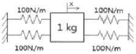
- 0.80
- 1.59
- 3.18
- 3.67
(정답률: 69%)
8. 근음장(near field)에 관한 설명으로 옳지 않은 것은?
- 일반적으로 이 영역은 관심대상음의 수파장 내에 위치한다.
- 입자속도가 음의 전파방향과 개연성이 있고, 잔향실이 대표적이다.
- 음의 세기는 음압의 2승과 비례관계가 거의 없다.
- 음원의 크기, 주파수와 방사면의 위상 등에 크게 영향을 받는다.
(정답률: 54%)
9. 다음 중 상온에서의 음속이 일반적으로 가장 빠른 것은? (단, 다른 조건은 종일)
- 물
- 공기
- 유리
- 금
(정답률: 39%)
10. 각진동수가 ω이고 변위진폭의 최대치가 A인 정현진동에 있어 가속도 진폭은?
- A/ω
- ωA
- ωA2
- ω2A
(정답률: 54%)
11. 음의 굴절에 관한 설명으로 옳지 않은 것은?
- 한 매질에서 타 매질로 음파가 전파될 때 매질 중의 음속은 서로 다르며, 음속 차가 클수록 굴절도 증가한다.
- 대기온도에 따른 굴절은 온도가 높은 쪽으로 굴절한다.
- 스넬(Snell)의 법칙은 굴절과 관련되는 법칙이다.
- 음원보다 상공의 풍속이 큰 경우 풍상 측에서는 상공을 향하여 굴절하고, 풍하 측에서는 지면을 향하여 굴절하므로 풍하 측에 비해 풍상 측의 감쇠가 큰 편이다.
(정답률: 47%)
12. 봉의 횡진동에 있어서 기본음의 주파수 관계식으로 옳은 것은? (단, l:길이, E:영률, ρ:재료의 밀도, k1:상수, d:각 봉의 1변 또는 원봉의 직경, σ:포아손비)
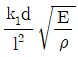
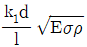
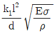
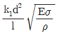
(정답률: 50%)
13. 고유 음향 임피던스를 나타낸 식으로 옳은 것은?
- 음압/입자속도
- 입자속도/음압
- 음압/입자변위
- 입자변위/음압
(정답률: 60%)
14. 다음 중 흡음률, 잔향시간 측정에 관한 설명으로 가장 거리가 먼 것은?
- 잔향시간은 재료의 흡음률을 산정하는 데 이용된다.
- 잔향시간은 실내에서 음원을 끈 순간부터 음압레벨이 60dB 감소하는데 소요되는 시간을 말한다.
- 잔향시간은 일반적으로 기록지의 레벨 감쇠곡선의 폭이 25dB 이상일 때 이를 산출한다.
- 난입사흡음률 측정법에 의한 정재파법은 일반적으로 잔향시간 측정범위가 2~5초 정도이다.
(정답률: 29%)
15. 고체 및 액체 중에서의 음의 전달속도(C)와 영률(E) 및 매질밀도(ρ)와의 관계식으로 옳은 것은? (단, 단위는 모두 적절하다고 가정)
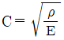
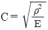
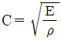
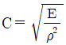
(정답률: 58%)
16. 스프링과 질량으로 구성된 진동계에서 스프링의 정적처짐이 2.5cm인 경우 이 계의 주기는?
- 0.16s
- 0.32s
- 3.15s
- 6.25s
(정답률: 71%)
17. 특정방향에 대한 음의 지향도를 나타내는 지향계수(Q, directivity factor)를 나타낸 식으로 옳은 것은? (단, SPLθ:동거리에서 어떤 특정방향의 SPL,
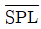
:음원에서 반경 r(m) 떨어진 구형면 상의 여러 지점에서 측정한 SPL의 평균치)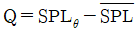
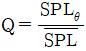
- Q=33.3log SPLθ+40
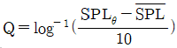
(정답률: 67%)
18. 두꺼운 콘크리트로 구성된 옥의 주차장의 바닥 위에 무지향성 점음원이 있으며, 이 점 음원으로부터 20m 떨어진 지점의 음압레벨은 100dB이었다. 공기 흡음에 의해 일어나는 감쇠치를 5dB/10m라고 할 때, 이 음원의 음향파워는?
- 약 141dB
- 약 144dB
- 약 126W
- 약 251W
(정답률: 42%)
19. 파에 관한 설명으로 옳지 않은 것은?
- 종파(소밀파)는 매질이 없어도 전파되며, 물결(수면)파, 지진파(S파)에 해당한다.
- 구면파는 음원에서 모든 방향으로 동일한 에너지를 방출할 때 발생하는 파로서 공중에 있는 점음원이 해당한다.
- 둘 또는 그 이상의 음파의 구조적 간섭에 의해 시간적으로 일정하게 음압의 최고와 최저가 반복되는 패턴의 파를 정재파라고 한다.
- 파면은 파동의 위상이 같은 점들을 연결한 면을 말한다.
(정답률: 67%)
20. 자유공간(공중)에 무지향성 점음원이 있다. 이 점음원으로부터 4m 떨어진 지점의 음압레벨이 80dB이라면 이 음원의 음향파워레벨은?
- 80dB
- 93dB
- 103dB
- 113dB
(정답률: 50%)
2과목: 소음방지기술
21. 음압레벨이 110dB(음원으로부터 1m 이격지점)인 점음원으로부터 30m 이격된 지점에서 소음으로 인한 문제가 발생되어 방음벽을 설치하였다. 방음벽에 의한 회절감쇠치가 10dB이고, 방음벽의 투과손실이 16dB라면 수음점에서의 음압레벨(dB)은?
- 68.4dB
- 71.4dB
- 73.4dB
- 75.4dB
(정답률: 34%)
22. 흡음덕트에 관한 설명으로 가장 거리가 먼 것은?
- 흡음덕트의 소음 감소는 덕트의 단면적, 흡음재의 흡음재의 흡음성능 및 두께, 설치면적, 등에 의해 주로 영향을 받는다.
- 광대역 주파수 성분을 갖는 소음을 줄일 수 있다.
- 고주파 영역보다는 저주파 영역에서 감음 성능이 탁월하게 좋다.
- 공기조화 시스템에 사용되는 덕트에서 fan이나 그 밖의 소음에 의해 발생하는 소음을 줄이기 위해 사용된다.
(정답률: 65%)
23. 방음대책을 음원대책과 전파경로대책으로 분류할 때, 다음 중 전파경로대책으로 가장 거리가 먼 것은?
- 소음기 설치
- 거리 감쇠
- 지향성 변환
- 방음벽 설치
(정답률: 65%)
24. 소음기 성능표시 중 “소음원에 소음기를 부착하기 전과 후의 공간상의 어떤 특정위치에서 측정한 음압레벨의 차와 그 측정위치”로 정의되는 것은?
- 삽입손실치(IL)
- 감음량(NR)
- 투과손실치(TL)
- 감음계수(NRC)
(정답률: 67%)
25. 자재의 수직입사 흡음률 측정방법으로서 관의 한쪽 끝에 시료를 충진하고 다른 한쪽 끝에 부착된 스피커를 사용하는 것은?
- 실내 평균 흡음률 계산방법
- 관내법(정재파법)
- 표준 음원에 의한 측정방법
- 등가소음레벨 측정방법
(정답률: 67%)
26. 자동차 소음원에 따른 대책으로 가장 거리가 먼 것은?
- 엔진소음-엔진의 구조 개선에 의한 소음저감
- 배기계소음-배기계관의 강성감소로 소음억제
- 흡기계소음-흡기관의 길이, 단면적을 최적화시켜 흡기음압을 저감
- 냉각팬소음-냉각성능을 저하시키지 않는 범위 내에서 팬 회전수를 낮춤
(정답률: 67%)
27. 송풍기, 덕트 또는 파이프의 외부 표면에서 소음이 방사될 때 진동부에 제진대책을 한 후 흡음재를 부착하고 그 다음에 차음재로 마감하는 작업을 무엇이라고 하는가?
- LAGGING 작업
- LINING 작업
- DAMPING 작업
- INSULATION 작업
(정답률: 70%)
28. 방음벽 재료로 음량특성 및 구조강도 이외에 고려하여야 하는 사항으로 가장 거리가 먼 것은?
- 방음벽에 사용되는 모든 재료는 인체에 유해한 물질을 함유하지 않아야 한다.
- 방음벽의 모든 도장은 광택을 사용하는 것이 좋다.
- 방음판은 하단부에 배수공(Drain hole) 등을 설치하여 배수가 잘 되어야 한다.
- 방음벽은 20년 이상 내구성이 보장되는 재료를 사용하여야 한다.
(정답률: 65%)
29. 밀도가 950kg/m3인 단일벽체(두께:25cm)에 600Hz의 순음이 통과할 때의 TL(dB)은? (단, 음파는 벽면에 난입시한다.)
- 48.8
- 52.6
- 60.0
- 66.8
(정답률: 58%)
30. 다음 중 소음대책을 세울 때 가장 먼저 하여야 하는 것은?
- 대책의 목표레벨을 설정한다.
- 문제주파수의 발생원을 탐사(주파수 대역별 소음 필요량 산정)한다.
- 수음점의 규제기준을 확인한다.
- 소음이 문제되는 지점의 위치를 귀로 판단하여 확인한다.
(정답률: 65%)
31. 덕트소음 대책과 관련한 설명 중 가장 거리가 먼 것은?
- 송풍기 정압이 증가할수록 소음은 감소하므로 공기분배시스템은 저항을 최소로 하는 방향으로 설계해야 한다.
- 덕트계에서 소음을 효과적으로 흡수하기 위해 흡음재를 송풍기 흡입구나 플래넘에 설치한다.
- 덕트 내의 소음 감소를 위한 흡음, 차음 등의 방법은 500Hz 이상의 고주파 영역에서 감쇠효과가 좋다.
- 덕트 내의 소음 감소를 위해 특별한 장치를 설치하지 않아도 덕트 내의 장애물이나 엘보우, 덕트 출구에서의 음파 반사 등에 의해 실내로 나오는 소음을 상당부분 줄일 수 있다.
(정답률: 69%)
32. 다음 중 실내의 흡음대책에 의해 기대할 수 있는 경제적인 감음량의 한계범위로 가장 적당한 것은?
- 5~10dB 정도
- 50~80dB 정도
- 100~150dB 정도
- 200~300dB 정도
(정답률: 62%)
33. 방음벽 설계 시 유의할 점으로 거리가 먼 것은?
- 음원의 지향성이 수음측 방향으로 클 때에는 벽에 의한 감쇠치가 계산치보다 작게 된다.
- 벽의 투과손실은 회절감쇠치보다 적어도 5dB 이상 크게 하는 것이 좋다.
- 벽의 길이는 선음원일 때에는 음원과 수음점 간의 직선거리의 2배 이상으로 하는 것이 바람직하다.
- 방음벽 설계는 무지향성 음원으로 가정한 것이므로 음원의 지향성과 크기에 대한 상세한 조사가 필요하다.
(정답률: 65%)
34. 투과손실은 중심주파수 대역에서는 질량법칙(Mass law)에 따라 변화한다. 음파가 단일 벽면에 수직입사 시 면밀도가 4배 증가하면 투과손실은 어떻게 변화하는가?
- 3dB 증가
- 6dB 증가
- 9dB 증가
- 12dB 증가
(정답률: 62%)
35. 팽창형 소음기의 입구 및 팽창부의 직경이 각각 55cm, 125cm일 경우, 기대할 수 있는 최대투과손실(dB)은? (단, f＜fc이며, fc(한계주파수)=
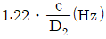
이다.)- 약 3
- 약 9
- 약 15
- 약 20
(정답률: 59%)
36. 차음재료 선정 및 사용상 유의할 점으로 거리가 먼 것은?
- 틈이나 파손이 없도록 하여야 한다.
- 서로 다른 재료로 구성된 벽의 차음효과를 효율적으로 하기 위해서는 SiTi치를 같게 하는 것이 좋다.
- 콘크리트블럭을 차음벽으로 사용하는 경우에는 표면에 몰타르를 발라서는 안된다.
- 큰 차음효과를 원하는 경우에는 내부에 다공질 재료를 삽입한 이중벽 구조로 한다.
(정답률: 62%)
37. 균질의 단일벽 두께를 2배로 할 경우 일치효과의 한계주파수는 어떻게 변화되겠는가? (단, 기타 조건은 일정하다.)
- 처음의 1/4
- 처음의 1/2
- 처음의 2배
- 처음의 4배
(정답률: 65%)
38. 다음 소음대책 중 기류음 저감대책으로 가장 적합한 것은?
- 가진력 억제
- 방사면 축소 및 제진처리
- 밸브의 다단화
- 방진
(정답률: 70%)
39. 연결된 두 방(음원실과 수음실)의 경계벽의 면적은 5m2이고, 수음실의 실정수는 20m2이다. 음원실과 수음실의 음압차이를 30dB 하고자 할 때, 경계벽 근처의 투과손실은? (단, 수음식 측정위치는 경계벽 근처로 한다.)
- 약 21dB
- 약 27dB
- 약 33dB
- 약 38dB
(정답률: 43%)
40. 다음 중 양질의 음향특성을 확보하기 위한 권장 잔향시간 중 통상적으로 가장 긴 시간이 요구되는 실은?
- 교회음악 연주실
- 회의실
- 설교실
- TV 스튜디오
(정답률: 79%)
3과목: 소음진동 공정시험 기준
41. 다음은 도로교통진동 측정자료 분석에 관한 사항이다. ()안에 들어갈 알맞은 것은?
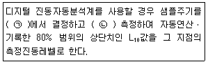
- ㉠ 0.1초이내, ㉡ 1분 이상
- ㉠ 0.1초이내, ㉡ 5분 이상
- ㉠ 1초이내, ㉡ 1분 이상
- ㉠ 1초이내, ㉡ 5분 이상
(정답률: 80%)
42. 환경기준에서 소음측정방법 중 측정점 선정방법으로 가장 거리가 먼 것은?
- 도로변지역은 소음으로 인하여 문제를 일으킬 우려가 있는 장소로 한다.
- 일반지역은 당해지역의 소음을 대표할 수 있는 장소로 한다.
- 일반지역의 경우 가급적 측정점 반경 5m 이내에 장애물(담, 건물 등)이 없는 지점의 지면 위 1.5~2.0m로 한다.
- 도로변지역의 경우 장애물이 있을 때에는 장애물로부터 도로 방향으로 1.0m 떨어진 지점의 지면 위 1.2~1.5m 위치로 한다.
(정답률: 53%)
43. 대상소음도를 구하기 위해 배경소음의 영향이 있을 경우, 보정치 산정식으로 옳은 것은? (단, d=측정소음도-배경소음도)
- -10log(1-0.1-0.1/d)
- -10log(1-0.1-0.1d)
- -10log(1-10-0.1/d)
- -10log(1-10-0.1d)
(정답률: 67%)
44. 소음계의 성능기준으로 옳은 것은?
- 지시계기의 눈금오차는 0.5dB 이내이어야 한다.
- 레벨레인지 변환기가 있는 기기에 있어서 레벨레인지 변환기의 전환오차가 1dB 이내 이어야 한다.
- 측정가능 주파수 범위는 31.5Hz~8Hz 이상이어야 한다.
- 측정가능 소음도 범위는 0~100dB 이상이어야 한다.
(정답률: 47%)
45. 다음은 규제기준 중 발파진동 측정시간 및 측정 지점수 기준이다. ()안에 들어갈 가장 알맞은 것은?
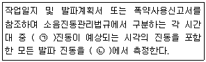
- ㉠ 평균발파, ㉡ 3지점 이상
- ㉠ 평균발파, ㉡ 1지점 이상
- ㉠ 최대발파, ㉡ 3지점 이상
- ㉠ 최대발파, ㉡ 1지점 이상
(정답률: 65%)
46. 항공기 소음시간 보정치인 1일간 항공기의 등가통화횟수(N)을 옳게 나타낸 것은? (단, 소음도 기록기를 사용한 경우이며, 비행횟수는 시간대별로 구분하여, 0시에서 07시까지의 비행횟수를 N1, 07에서 19시까지의 비행횟수를 N2, 19시에서 22시까지의 비행횟수를 N3, 22시에 24시까지의 비행횟수를 N4라 함)
- N=N2+3N3+10(N1+N4)
- N=N1+3N2+10(N3+N4)
- N=N4+5N3+10(N1+N2)
- N=N3+5N4+10(N1+N2)
(정답률: 59%)
47. 공장진동 측정자료 평가표 서식에 기재되어야 하는 사항으로 거리가 먼 것은?
- 충격진동의 발생시간(h)
- 측정 대상업소의 소재지
- 진동레벨계명
- 지면조건
(정답률: 40%)
48. 배출허용기준의 소음측정방법 중 배경소음 보정방법에 관한 설명으로 옳지 않은 것은?
- 측정소음도가 배경소음도보다 10dB 이상 크면 배경소음의 영향이 극히 작기 때문에 배경소음의 보정 없이 측정소음도를 대상소음도라 한다.
- 측정소음도에 배경소음을 보정하여 대상소음도로 한다.
- 측정소음도가 배경소음보다 3dB 미만으로 크면 배경소음이 대상소음보다 크므로 재측정하여 대상소음도를 구하여야 한다.
- 배경소음도 측정 시 해당 공장의 공정상 일부 배출시설의 가동중지가 어렵거나 해당 배출시설에서 발생한 소음이 배경소음에 영향을 미친다고 판단될 경우라도 배경소음도 측정없이 측정소음도를 대상소음도라 할 수 없다.
(정답률: 58%)
49. 환경기준 중 소음측정 시 청감보정회로 및 동특성 측정조건으로 옳은 것은?
- 소음계의 청감보정회로는 A특성에 고정, 동특성은 원칙적으로 느림(slow)모드로 하여 측정하여야 한다.
- 소음계의 청감보정회로는 C특성에 고정, 동특성은 원칙적으로 느림(slow)모드로 하여 측정하여야 한다.
- 소음계의 청감보정회로는 A특성에 고정, 동특성은 원칙적으로 빠름(fast)모드로 하여 측정하여야 한다.
- 소음계의 청감보정회로는 C특성에 고정, 동특성은 원칙적으로 빠름(fast)모드로 하여 측정하여야 한다.
(정답률: 65%)
50. 소음계의 구조별 성능기준에 관한 설명으로 옳지 않은 것은?
- 마이크로폰:지향성이 작은 입력형으로 한다.
- 레벨레인지 변환기:음향에너지를 전기에너지로 변환 증폭시킨다.
- 동특성조절기:지시계기의 반응속도를 빠름 및 느림의 특성으로 조절할 수 있는 조절기를 가져야 한다.
- 출력단자:소음신호를 기록기 등에 전송할 수 있는 교류단자를 갖춘 것이어야 한다.
(정답률: 40%)
51. 다음은 소음계의 구성도를 나타낸 것이다. 각 부분의 명칭으로 옳은 것은?
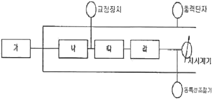
- 가:fast-sloe switch
- 나:weighting networks
- 다:amplifier
- 라:microphone
(정답률: 67%)
52. 도로교통소음 관리기준 측정방법에 관한 설명으로 옳지 않은 것은?
- 소음도의 계산과정에서는 소수점 첫째자리를 유효숫자로 하고, 측정소음도(최종값)는 소수점 첫째자리에서 반올림한다.
- 소음계의 청감보정회로는 A특성에 고정하여 측정하여야 한다.
- 디지털 소음자동분석계를 사용할 경우에는 샘플주기를 1초 이내에서 결정하고 10분 이상 측정하여 자동 연산ㆍ기록한 등가소음도를 그 지점의 측정소음도로 한다.
- 소음도 기록기 또는 소음계만을 사용하여 측정할 경우에는 계기조정을 위하여 먼저 선정된 측정위치에서 대략적인 소음의 변화양상을 파악한 후 소음계 지시치의 변화를 목측으로 5초 간격 30회 판독ㆍ기록한다.
(정답률: 50%)
53. 도로교통소음을 측정하고자 할 때, 소음계의 동특성은 원칙적으로 어떤 모드로 측정하여야 하는가?
- 느림(slow)
- 빠름(fast)
- 충격(impulse)
- 직선(lin)
(정답률: 59%)
54. 환경기준 중 소음측정 시 풍속이 몇 m/s 이상이면 반드시 마이크로폰에 방풍망을 부착하여야 하는가?
- 1m/s 이상
- 2m/s 이상
- 5m/s 이상
- 10m/s 이상
(정답률: 67%)
55. 다음 중 도로교통진동 측정자료 평가표 서식에 기재하여야 할 사항으로 가장 거리가 먼 것은?
- 관리자
- 보정치 합계
- 측정지점 약도
- 측정자
(정답률: 65%)
56. 다음은 소음진동공정시험기준상 용어의 정의이다. ()안에 들어갈 알맞은 것은?
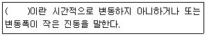
- 변동진동
- 정상진동
- 극소진동
- 배경진동
(정답률: 72%)
57. A위치에서 기계의 소음을 측정한 결과 기계 가동 후의 측정소음도가 89dB(A), 기계 가동 전의 소음도가 85dB(A)로 계측되었다. 이 때 배경소음 영향을 보정한 대상소음도는?
- 84.4dB(A)
- 85.4dB(A)
- 86.8dB(A)
- 88.7dB(A)
(정답률: 47%)
58. 철도진동관리기준 측정방법에 관한 사항으로 옳은 것은?
- 전동픽업의 설치장소는 완충물이 없고, 충분히 다져서 단단히 굳은 장소로 한다.
- 요일별로 진동 변동이 큰 평일(월요일부터 일요일 사이)에 당해지역의 철도진동을 측정하여야 한다.
- 기상조건, 열차의 운행횟수 및 속도 등을 고려하여 당해지역의 30분 평균 철도 통행량 이상인 시간대에 측정한다.
- 진동픽업(pick-up)의 설치장소는 옥내지표를 원칙으로 하고, 회절현상이 예상되는 지점은 선정한다.
(정답률: 43%)
59. 당해지역의 소음을 대표할 수 있는 주간 시간대는 2시간 간격을 두고 1시간씩 2회 측정하여 산술평균하며, 야간 시간대는 1회 1시간 동안 측정하는 소음은?
- 도로교통소음
- 철도소음
- 발파소음
- 항공기소음
(정답률: 36%)
60. 7일간 측정한 WECPNL값이 각각 76, 78, 77, 78, 80, 79, 77dB일 경우 7일간 평균 WECPNL(dB)은?
- 77
- 78
- 79
- 80
(정답률: 58%)
4과목: 진동방지기술
61. 탄성블럭 위에 설치된 기계가 2400rpm으로 회전하고 있다. 이 기계의 무게는 907N 이며, 그 무게는 평탄 진동한다. 이 기계를 4개의 스프링으로 지지할 때 스프링 1개당의 스프링 정수는 약 얼마인가? (단, 진동차진율은 90%로 하며, 감쇠는 무시한다.)
- 1150 N/cm
- 1330 N/cm
- 1610 N/cm
- 1740 N/cm
(정답률: 54%)
62. 어떤 질점의 운동변위(x)가 아래 표와 같이 표시될 때, 가속도의 최대치(m/s2)는?
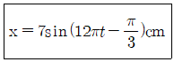
- 4.93
- 9.95
- 49.3
- 99.5
(정답률: 24%)
63. 다음은 자동차의 방진과 관련된 용어의 설명이다. ()안에 들어갈 알맞은 것은?
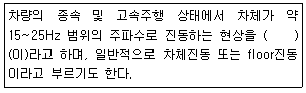
- 오인드업
- 셰이크
- 시미
- 프론트엔드
(정답률: 62%)
64. 강제진동수(f)가 계의 소유진동수(fn)보다 월등히 클 경우 진동제어요소로 가장 적합한 것은?
- 계의 질량제어
- 스프링의 저항제어
- 스프링에 강도제어
- 스프링의 댐퍼(damper)제어
(정답률: 24%)
65. 그림과 같은 U자관 내의 유체 운동은 자유진동으로 해석할 수 있다. 다음 중 유체운동의 주기는? (단, ℓ은 유체기둥의 길이이다.)
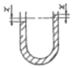
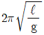
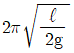
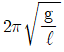
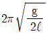
(정답률: 43%)
66. 주어진 조화 진동운동이 8cm의 변위진폭, 2초 주기를 가지고 있다면 최대 진동속도(cm/s)는?
- 약 14.8
- 약 21.6
- 약 25.1
- 약 29.3
(정답률: 54%)
67. 지반진동 차단 구조물인 방진구에 있어서 다음 중 가장 중요한 설계인자는?
- 트랜치의 깊이
- 트랜치의 폭
- 트랜치의 형상
- 트랜치의 위치
(정답률: 70%)
68. 스프링과 질량으로 구성된 진동계에서 스프링의 정적처짐이 4.2cm인 경우 이 계의 주기(s)는?
- 0.41
- 0.68
- 1.47
- 2.43
(정답률: 50%)
69. 어떤 조화운동이 5cm의 진폭을 가지고 3sec의 주기를 갖는다면, 이 조화운동의 최대 가속도는?
- 15.2cm/s2트랜치의
- 21.9cm/s2트랜치의
- 24.7cm/s2트랜치의
- 30.1cm/s2트랜치의
(정답률: 54%)
70. 주파수 5Hz의 표면파(n=0.5)가 전파속도 100m/s로 지반의 내부 감쇠정수 0.⑤의 지반을 전파할 때, 진동원으로부터 20m 떨어진 지점의 진동레벨은? (단, 진동원에서 5m 떨어진 지점에서의 진동레벨은 80dB이다.)
- 약 66dB
- 약 69dB
- 약 72dB
- 약 75dB
(정답률: 44%)
71. 동적배율에 관한 설명으로 옳지 않은 것은?
- 동적배율은 천연고무류가 합성고무류에 비하여 작은 편이다.
- 동적배율은 방진고무의 영률 20N/cm2에서 1.1 정도이다.
- 동적배율은 방진고무의 영률이 커짐에 따라 작아진다.
- 동적배율은 방진고무에서 통상 1.0 이상의 값을 나타낸다.
(정답률: 34%)
72. 가진력 저감을 위한 방진대책으로 가장 거리가 먼 것은?
- 단조기는 단압프레스로 교체한다.
- 기계에서 발생하는 가진력은 지향성이 있으므로 기계의 설치 방향을 바꾼다.
- 크랭크 기구를 가진 왕복운동기계는 1개의 실린더를 가진 것으로 교체한다.
- 왕복운동압축기는 터보형 고속회전압축기로 교체한다.
(정답률: 59%)
73. 다음 중 방진 시 고려사항으로 옳지 않은 것은?
- 강제진동수가 고유진동수에 비해 아주 작을 때에는 스프링 정수를 크게 한다.
- 강제진동수가 고유진동수와 거의 같을 때에는 감쇠가 작은 방진재를 사용하거나 dash pot 등은 제거한다.
- 강제진동수가 고유진동수에 비해 아주 클 때에는 기계의 질량을 크게한다.
- 가진력의 주파수가 고유진동수의 0.8~1.4배 정도일 때에는 공진이 커지므로 이 영역은 가능한 피한다.
(정답률: 31%)
74. 어떤 기계를 4개의 같은 스프링으로 지지했을 때 기계의 무게로 일정하게 3.88mm 압축되었다. 이 기계의 고유진동수(Hz)는?
- 18Hz
- 12Hz
- 8Hz
- 4Hz
(정답률: 50%)
75. 기계의 중량이 50N인 왕복동 압축기가 있다. 분당 회전수가 6000이고, 상하 방향 불평형력이 6N이며, 기초는 콘크리트 재질로 탄성지지 되어 있고, 진동전달력이 2N이었다면 이 진동계의 고유진동수(Hz)는?
- 30
- 40
- 50
- 60
(정답률: 36%)
76. 그림과 같은 1 자유도계 진동계가 있다. 이 계가 수직방향 x(t)으로 진동하는 경우 이 진동계의 운동방정식으로 옳은 것은? (단, m=질양, k=스프링정수, C=감쇠게수, f(t)=외부가진력)
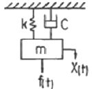
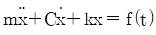
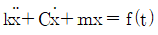
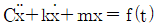
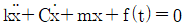
(정답률: 60%)
77. 금속 자체에 진동흡수력을 갖는 제진합금의 분류 중 Mg, Mg-0.6% Zr 합금 등으로 이루어진 형태는?
- 복합형
- 전위형
- 쌍전형
- 강자성형
(정답률: 36%)
78. 공해진동의 특성을 대역분석하기 위해 옥타브 대역별 중심주파수가 필요하다. 다음 중 1/1 옥타브 대역 중심주파수가 아닌 것은?
- 2.0Hz
- 3.15Hz
- 8.0Hz
- 63Hz
(정답률: 50%)
79. 정현진동의 가속도 진폭이 3×10-3m/s2일 때 진동 가속도 레벨(VAL)은? (단, 기준 10-5m/s2)
- 약 34dB
- 약 40dB
- 약 47dB
- 약 67dB
(정답률: 60%)
80. 다음의 사용 특성을 만족하는 탄성지지 재료로 가장 적합한 것은?
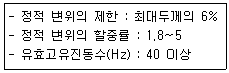
- 금속코일스프링
- 방진고무
- 콜-크
- 펠트
(정답률: 40%)
5과목: 소음진동 관계 법규
81. 소음진동관리법상 소음덮개를 떼어 버린 자동차 소유자에게 개선명령을 하려는 경우 얼마 이내의 범위에서 개선에 필요한 기간에 그 자동차의 사용정지를 함께 명할 수 있는가?
- 10일 이내
- 14일 이내
- 15일 이내
- 30일 이내
(정답률: 36%)
82. 소음진동관리법규상 소음도 검사기관의 장이 수수료 산정기준에 따른 소음도 검사수수료를 정하고자 할 때, 미리 소음도 검사기관의 인터넷 홈페이지에 얼마 동안 그 내용을 게시하고 이해관계인의 의견을 들어야 하는가?
- 5일(긴급한 사유가 있는 경우에는 3일)간
- 7일(긴급한 사유가 있는 경우에는 5일)간
- 14일(긴급한 사유가 있는 경우에는 7일)간
- 20일(긴급한 사유가 있는 경우에는 10일)간
(정답률: 50%)
83. 다음은 소음진동관리법규상 공사장 방음시설 설치기준이다. ()안에 들어갈 알맞은 것은?
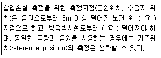
- ㉠ 1.2m, ㉡ 2m 이상
- ㉠ 1.2m, ㉡ 1.5m 이상
- ㉠ 3.5m, ㉡ 2m 이상
- ㉠ 3.5m, ㉡ 1.5m 이상
(정답률: 50%)
84. 소음진동관리법규상 소음배출시설에 해당하지 않는 것은? (단, 동력기준시설 및 기계ㆍ기구)
- 22.5kW 이상의 제분기
- 22.5kW 이상의 압연기
- 22.5kW 이상의 변속기
- 22.5kW 이상의 초지기
(정답률: 46%)
85. 소음진동관리법규상 시ㆍ도지사가 매년 환경부장관에게 제출하여야 하는 주요 소음ㆍ진동관리시책의 추진상황에 관한 연차보고서에 포함될 내용으로 가장 거리가 먼 것은?
- 소음ㆍ진동 발생원 및 소음ㆍ진동 현황
- 소음ㆍ진동 저감대책 추진계획
- 소음ㆍ진동 저감 결과보고서 및 익년 배출시설 증설계획
- 소요 재원의 확보계획
(정답률: 44%)
86. 다음은 소음진동관리법규상 배출시설 변경신고를 하는 경우에 관한 사항이다. ( ㉠ )안에 들어갈 가장 알맞은 것은?
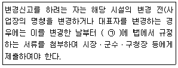
- 7일 이내
- 15일 이내
- 30일 이내
- 60일 이내
(정답률: 12%)
87. 소음진동관리법상 교통기관에 속하지 않는 것은?
- 기차
- 전차
- 자동차
- 항공기
(정답률: 54%)
88. 소음진동관리법규상 주거지역, 공사장 야간 조건에서의 생활소음 규제기준은? (단, 기타사항 등은 고려하지 않는다.)
- 50dB(A) 이하
- 60dB(A) 이하
- 7dB(A) 이하
- 80dB(A) 이하
(정답률: 50%)
89. 소음진동관리법상 소음도표지를 붙이지 아니하거나 거짓의 소음도표지를 붙인 자에 대한 벌칙기준은?
- 3년 이하의 징역 또는 3천만원 이하의 벌금
- 1년 이하의 징역 또는 1천만원 이하의 벌금
- 6개월 이하의 징역 또는 500만원 이하의 벌금
- 500만원 이하의 벌금
(정답률: 56%)
90. 소음진동관리법규상 확인검사대행자와 관련한 행정처분기준 중 고의 또는 중대한 과실로 확인검사 대행업무를 부실하게 한 경우 2차 행정처분기준으로 옳은 것은?
- 경고
- 업무정지 1월
- 업무정지 3월
- 등록취소
(정답률: 32%)
91. 다음은 소음진동관리법규상 폭약 사용규제 요청에 관한 사항이다. ()안에 들어갈 가장 적합한 것은?
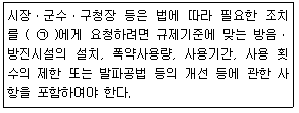
- 지방경찰청장
- 국토교통부장관
- 환경부장관
- 파출소장
(정답률: 50%)
92. 소음진동관리법규상 자동차 사용정지표지의 색상기준으로 옳은 것은?
- 바탕색은 흰색으로, 문자는 검은색으로 한다.
- 바탕색은 노란색으로, 문자는 파란색으로 한다.
- 바탕색은 흰색으로, 문자는 파란색으로 한다.
- 바탕색은 노란색으로, 문자는 검은색으로 한다.
(정답률: 46%)
93. 소음진동관리법규상 대형 승용 자동차의 소음허용기준으로 옳은 것은? (단, 운행자동차로서 2006년 1월1일 이후 제작되는 자동차)
- 배기소음 :110dB(A) 이하, 경정소음:110dB(C) 이하
- 배기소음 :110dB(A) 이하, 경정소음:112dB(C) 이하
- 배기소음 :1⑤dB(A) 이하, 경정소음:110dB(C) 이하
- 배기소음 :1⑤dB(A) 이하, 경정소음:112dB(C) 이하
(정답률: 34%)
94. 소음진동관리법규상 생활진동 규제기준에 대한 설명으로 옳지 않은 것은?
- 주간 시간대에 주거지역의 생활진동 규제기준은 65dB(V) 이하이다.
- 발파진동의 경우 주간에만 규제기준치에 +10dB을 보정한다.
- 공사장의 진동 규제기준은 주간의 경우 특정공사 사전신고 대상 기계ㆍ장비를 사용하는 작업시간이 1일 2시간 이하일 때는 +10dBV을 규제기준치에 보정한다.
- 심야 시간대에 주거지역의 생활진동 규제기준은 55dB(V) 이하이다.
(정답률: 22%)
95. 환경정책기본법상 국가환경종합계획에 포함되어야 할 사항으로 가장 거리가 먼 것은? (단, 그 밖의 부대사항은 제외)
- 인구ㆍ산업ㆍ경제ㆍ토지 및 해양의 이용 등 환경변화 여건에 관한 사항
- 환경오염 배출업소 지도ㆍ단속 계획
- 사업의 시행에 소요되는 비용의 산정 및 재원 조달방법
- 환경오염원ㆍ환경오염도 및 오염물질 배출량의 예측과 환경오염 및 환경훼손으로 인한 환경질의 변화전망
(정답률: 50%)
96. 소음진동관리법령상 소음발생건설기계 소음도 검사기관의 지정기준 중 검사장의 면적기준으로 옳은 것은?
- 100m2 이상(가로 및 세로의 길이가 각각 10m 이상)
- 225m2 이상(가로 및 세로의 길이가 각각 15m 이상)
- 400m2 이상(가로 및 세로의 길이가 각각 20m 이상)
- 900m2 이상(가로 및 세로의 길이가 각각 30m 이상)
(정답률: 47%)
97. 소음진동관리법령상 인증을 생략할 수 있는 자동차에 해당하는 것은?
- 주한 외국군대의 구성원이 공무용으로 사용하기 위하여 반입하는 자동차
- 여행자 등이 다시 반출할 것을 조건으로 일시 반입하는 자동차
- 외국에서 1년 이상 거주한 내국인이 주거를 이전하기 위하여 이주물품으로 반입하는 1대의 자동차
- 항공기 지상조업용(地上祖業用)으로 반입하는 자동차
(정답률: 34%)
98. 소음진동관리법령상 과태료 부과기준에 관한 설명으로 옳지 않은 것은?
- 운행차 소음허용기준을 초과한 자동차 소유자로서 배기소음허용기준은 2dB(A) 미만 초과한 자에 대한 각 위반차수별 과태료 부과금액은 1차 위반은 20만원, 2차 위반은 20만원, 3차 이상 위반은 20만원이다.
- 부과권자는 위반행위의 동기와 그 결과 등을 고려하여 과태료 금액의 2분의 1의 범위에서 감경할 수 있다.
- 관계공무원의 출입ㆍ검사를 거부ㆍ방해 또는 기피한 자에 대한 각 위반차수별 과태료 부과 금액은 1차 위반은 60만원, 2차 위반은 80만원, 3차 위반은 100만원 이다.
- 일반기준에 있어서 위반행위의 횟수에 따른 부과기준은 해당 위반행위가 있은 날 이전 최근 3년간 같은 위반행위로 부과처분을 받을 경우에 적용한다.
(정답률: 43%)
99. 환경정책기본법상 용어의 정의로 옳지 않은 것은?
- “방진시설”이란 소음ㆍ진동배출시설이 아닌 물체로부터 발생하는 진동을 없애거나 줄이는 시설로서 환경부령으로 정하는 것을 말한다.
- “소음발생건설기계”란 건설공사에 사용하는 기계 중 소음이 발생하는 기계로서 환경부령으로 정하는 것을 말한다.
- “공장”이란「산업집적활성화 및 공장설립에 관한 법률」규정의 공장과 「국토의 계획 및 이용에 관한 법률」규정에 따라 결정된 공항시설 안의 항공기 정비공장을 말한다.
- “자동차”란「자동차관리법」규정에 따른 자동차와「건설기계관리법」규정에 따른 건설기계 중 환경부령으로 정하는 것을 말한다.
(정답률: 50%)
100. 환경정책기본법규상 “생활소음ㆍ진동의 규제와 관련한 행정처분기준”에서 행정처분은 특별한 사유가 없는 한 위반행위를 확인한 날부터 얼마 이내에 명하여야 하는가?
- 5일 이내
- 10일 이내
- 15일 이내
- 30일 이내
(정답률: 34%)